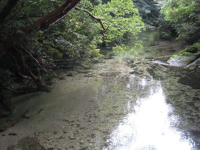
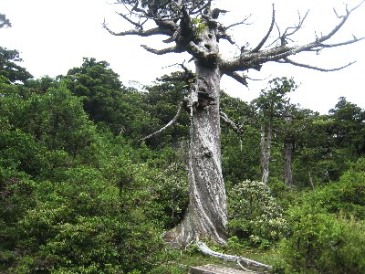
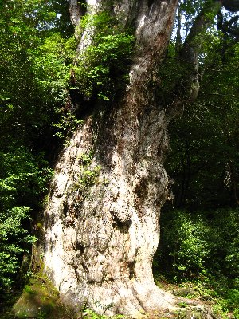
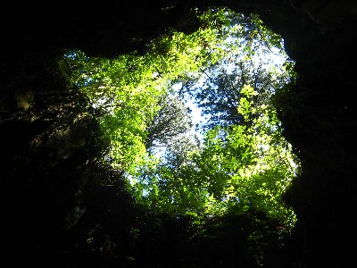
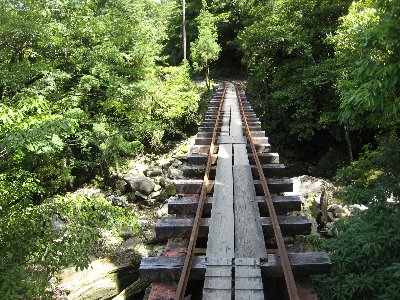

屋久島登山 | 2010年7月 |
|---|---|
| 世界遺産屋久島と言えば、知らない人はいないよね。屋久島と言えば縄文杉。これも知ってるよね。では、宮之浦岳って知ってる？ 宮之浦岳(1,936m) は九州一高い山で、百名山の一つでもあり最南端にある百名山なんだよね。 屋久島自体は周囲約132kmの小さい（と言っても全国でも9番目の大きさだが（北海道・本州・四国・九州を除く））島だけど、それだけ洋上に突き出でいるってことなんだな〜 そのため雨が多く「屋久島は月のうち、三十五日は雨」なんて言われています。 島の大部分は花崗岩から形成されていて、そのためか雨が降ってもあまり水が濁らない。大雨の後に行ったのに、滝や川がきれいだもの。 岩一個一個も巨大で、有名な千尋の滝とかで、山一つが一個の岩で出来てる姿を見ることが出来るんです。 | |
 鹿児島→屋久島 ボンバルディア♪ |  千尋の滝 左に見える山は一枚岩なんだよ〜 |
| さて、そんな屋久島の山に登ろうと考え、ついでに親孝行（したことないし）も兼ねるかって思いつき、両親連れて小屋泊まりで宮之浦岳に登ってきました。 簡単にルートを説明すると、 一日目 淀川登山口—淀川小屋—花之江河(湿原)—宮之浦岳—新高塚小屋(泊） (参考タイム７時間０５分 ) 二日目 新高塚小屋—縄文杉—ウィルソン株—小杉谷—荒川登山口 (参考タイム5時間25分 ) こんな感じです。小屋は無人のため、シュラフや食糧持参です。水は所々水場があるので、なんとかなります。結構有名なルートで、登山客もそれなりにいます。 問題は梅雨が開けず、ちょっと橋脚が流されかかった淀川の橋が危険防止のため通行止めってこと。こりゃ〜困った。そこが通れないと荒川登山口から縄文杉の往復しかない。宮之浦岳登れない。 もうひとつ、ほんと雨が多いです。連日TVで九州地方の豪雨が報道されています。土砂災害や床上浸水が報道されています。 そんな心配の中、出発前日に淀川橋の通行止めが明日から解除！って出ました！ マジ嬉しい！なんとかなるもんだ。 出発当日もちょっと雨。中部セントレアから飛行機で鹿児島へ。鹿児島から屋久島へも飛行機で。 中部セントレア出発時に、鹿児島空港霧のため引き返すかもしれませんと言われたが、これもクリアー。良かった良かった。 屋久島までの飛行機ボンバルディアも順調に脚が出ました。(笑) ボンバルディア乗りたかったんだよね〜 その日は島内観光した後に、安房の民宿に泊まりました。 | |
 登山道に入ると巨木がいっぱい |  通行止めになっていた淀川 透き通っていて綺麗 |
| ≪一日目≫ 早朝5時にタクシーで淀川登山口へ。運転手さんが気を使ってくれて、途中の紀元杉や上川杉で記念写真まで撮りました。 6:30 淀川登山口出発。両親ともに60代だし荷物背負っているので、ゆっくりゆっくり歩きました。途中で足痛いって言われても困るしね。 7:40 淀川小屋に到着。休憩して朝食。ここまでの道も、杉の大木で一杯です。みんな大きいんですよ。いつも植林された杉ばかり見てるでしょう？ 自然の杉ってここまで大きくなるんですね。 歩いていると、左手の山頂に巨大な岩が！しかも、等間隔に切ったようになってます！ これは豆腐岩と呼ばれていて、高盤岳山頂に鎮座しています。 前述したけど、屋久島は花崗岩で出来ているので、山上では侵食された奇岩が多く見られるんですよ。こんな風景を見たくて宮之浦岳に来たようなもんです。 9:40 小花之江河に到着。ここは日本最南端の高層湿原なんだって。高層湿原って先週八島湿原で習ったのと同じかな。木道が整備されていて歩きやすい。 ここから道はちょっと登っていきます。道幅も狭く、雨の後のためか川になっていたりします。しかし、花崗岩のためか水は濁っていなくて、綺麗な川を歩いているようで気持ちがいい。下が岩だから汚れないしね。濡れるけど。 行程の半分位から、杉は見られなくなり低木や茂みになってきて、見晴らしが良くなります。すると、ほんと周りの山々には奇石が鎮座しているのが分かります。絶妙なバランスで岩同士が乗っているのもあり、良く落ちないもんだと感心します。 投石岳、安房岳、翁岳のすぐ横を通りながら、栗生岳手前で昼飯を食べ、本日のメイン宮之浦岳へ。 13:45宮之浦岳着。またひとつ百名山制覇。 | |
 豆腐岩（高盤岳） 白い筋みたいのは木だよ大きさ分かる？ |  この辺の巨木は風で捻れちゃうんだって |
| 宮之浦岳では天気良いんだけど、周りの山（下の方）に雲があり、すべてを見渡すことが出来なかった。けど良い景色です。 時間が押していたので、景色を楽しんだ後すぐ出発。そろそろ疲労も出始め、だけど、あせらずゆっくりと。 17:00 新高塚小屋到着。11時間半掛ったことになります。時間オーバー気味だけど、ゆっくりと歩いたおかげか、両親ともに足は痛くないと言っていたので良しとしよう。 小屋には先客が何名かいたけど、寝る場所には困らなかった。ネットの写真通りに、見た目すごい小屋だ。 夕食はレトルトカレー。バーナーでお湯を沸かします。小屋の周りをヤクシカがウロウロしているけど、寄ってはこない。 ここのトイレが、小屋からちょっと離れた汲み取り式なんだけど、扉開けるとハエが大量に出てきます。かなり覚悟を必要とします。けど、何年か前に夜トイレに行ったきり行方不明になっちゃった人がいるそうで（現在も発見されていないそうです）、我慢しないで行けるときにトイレ行きましょう。他でしないでね。 ちなみに、この小屋ヒメネズミが出ます。寝ているとビニール袋をガサガサやり始めるので、ビニール袋（とくに食べ物）はザックに入れましょう。枕元まで来ます。私二匹ほど目撃しました。 こうなると、外でテント泊も良いよね。 | |
 人の形に見える巨岩 名前有るのかな〜 |  縄文杉 写真だとスケールが全然分からない |
| 《二日目》 ネズミの大運動会で、ちょっぴり寝不足か。夜中に雨も降りましたが、朝になると曇り。 朝食を食べて、6時出発のつもりが7時出発。当然、他の人は出発済み。 今日はほぼ下りです。樹林帯に入っているので、朝の気持ちがいい風と、鳥の鳴き声で森林浴気分です。 8:40 縄文杉到着。さすがに誰もいません。貸し切り状態です。写真撮るけど、この大きさ・・・表現できない！ 縄文杉は樹齢が7200歳とも言われているけど定かではないようで、放射性炭素年代測定法で推定樹齢約2000年以上は確実なんだそうです。幹周：16.1m 樹高：30m（マンション８〜９階建かよ） 内部組織の年代が入り乱れ、同心円状の年輪を形成していないため、何本の木が合わさった合体杉とも言われたけど、遺伝子分析解析の結果一本の杉であることは間違いないんだって。 ようはデカ過ぎてわからん！ってことみたい。近くに大王杉(放射性炭素年代測定法で樹齢3000年以上)もあるけど、それよりかなり大きいもの。 なんにせよ、3000年だとか、7200年だとか、どの道すごい年月ここに立っているってことだよね。だいたい3000年前だって紀元前10世紀。歴史の授業の初めのころじゃね〜 縄文時代は、約1万6,500年前から約3,000年前なんて言ってるので、どのみち縄文杉だよね。一本の木の歴史って凄いね。 さて、夫婦杉、大王杉を見て、やっとウィルソン株到着。ここまで来るのに、日帰りの縄文杉ツアーの登山客とすれ違ったので、狭い山道大変です。今日も平日のはずなのに、ツアー客は総勢600名だって。最盛期はどうなるの？ ウィルソン株。要はデカイ切り株で、中が空洞になっていて入れちゃいます。上が見えます。ちなみに、見上げる空が、場所によりハート型に見えるって騒いでますよね。 豊臣秀吉の命令により大坂城（大阪城）築城（京都の方広寺建立とも）の為に切られたと言われていて、胸高周囲13.8mもある切り株です。 そこから30分も歩くと、トロッコ道に出ます。後は荒川登山口まで、このトロッコ道を歩くだけ。８㎞有るけどね。 トロッコは、昔屋久杉を切りだし運ぶためのもの。手つかずの自然と思うなかれ、屋久島も人間の手が入っていたんです。 17世紀に薩摩藩による屋久杉の伐採が本格化し、明治になるまでにヤクスギの良木のほとんどが切られちゃったって。樹齢1000年を超える巨木は年輪がゆがみ、山地での製材が不可能であったため放置されて、今に残るってことらしい。 荒川登山口近くに、小杉谷という今は誰も住んでいないけど、大正12年に開設された原生林伐採の前線基地が有りました。最盛期の昭和35年には、133世帯人口540人、小・中学校がある町だったって言うんだから、どれだけ切りだしていたかって事だよね。 でも、植林したような跡が見えないところが屋久島なのかな〜 たとえトロッコ道があっても不自然さ、人工的って気がしないんですよ。 | |
|  ウィルソン株の中から空を見ました。 顔を右に傾けると・・ハートに見えますが？ |  こんなトロッコ道を歩きます |
| トロッコ道も２時間も歩けば飽きてきます。足が疲れてきます。 15:30 やっと荒川登山口に到着〜 はぁ〜疲れた。結局雨には降られず、レインコートは使いませんでした。よかった〜 宿に戻り、風呂入ってのビールが美味いこと美味いこと。さらに夕食をガッツリ食べて幸せでした。トビウオのから揚げ、首折れサバの刺身、頂きました♪ 屋久島は、人の手が全く入っていないわけではないけど、入っていない所のほうが多いのでしょう。単なる森ではなく、太古の森、ジャングルという印象を受けました。そこに、ちょっぴり人が住まわせて貰っているような。 癒しの場所というよりも、パワーを貰える場所です。島全体にエネルギーが溢れている。そんな感じの場所です。 一度は行ってみたいと思っている方、思い立ったが吉日と言います。また今度では、何時行けるかわかりません。行きたくなったら行きましょう！ 山が好き方は、ぜひ宮之浦岳行ってみてください。あの風景は縄文杉だけコースでは見られません。 写真＆コメント ｂｙ べっしー | |